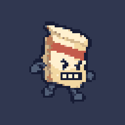

Step 0 · eight painted samples
Art review only. The painted v1 props, previous rejected work and new samples are labeled separately. No runtime assets have been replaced.
Source-size disclosure: image generation returned different raster sizes than requested. Each subject was fitted proportionally onto an exact 8× working canvas, then reduced using the most common color per 8×8 block. Both stages are saved for inspection.
Handoff · Manifest · Validation · All eight
Bill animation · 110 ms

Lawn · 2×2 seam check